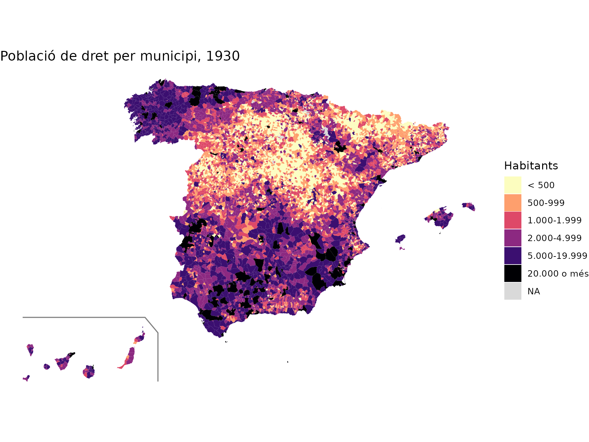
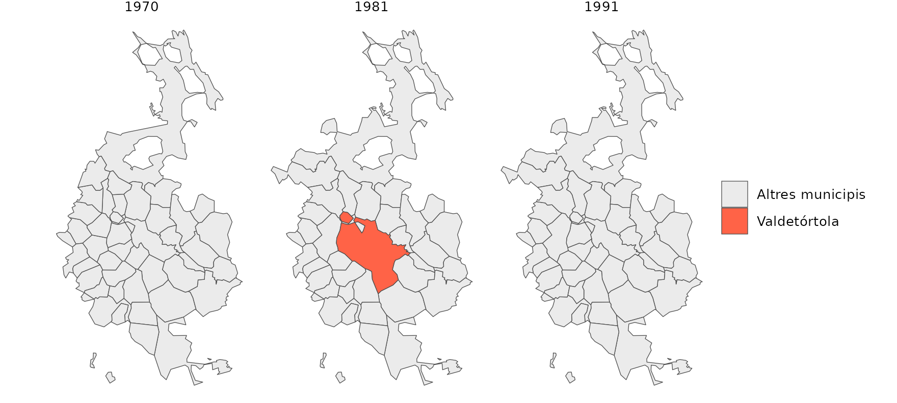

mapSpainHist proporciona els límits municipals d’Espanya per a cada cens de població entre 1900 i 2001, juntament amb les dades d’aquests censos. Aquest article mostra com obtenir els mapes, com representar-hi dades i com seguir els canvis municipals al llarg del temps.
Avís. La forma de la major part dels municipis històrics és una reconstrucció aproximada. Els mapes són útils sobretot per representar dades municipals; feu-los servir amb cautela per a variables geogràfiques com la superfície o les distàncies. Vegeu la metodologia.
Instal·lació i primera càrrega
remotes::install_github("pauvallprat/mapSpainHist")Els censos disponibles són:
mhist_census_years()
#> [1] 1900 1910 1920 1930 1940 1950 1960 1970 1981 1991 2001La funció esp_get_munic_hist() retorna un objecte
sf amb un polígon per a cada municipi vigent en el cens
indicat. La primera vegada descarrega les geometries de Zenodo (uns 6,5
MB) i les desa a la memòria cau de l’ordinador; les vegades següents les
llegeix directament del disc.
m1930 <- esp_get_munic_hist(1930)
nrow(m1930)
#> [1] 9343
head(sf::st_drop_geometry(m1930))
#> cod_ine no_munic censo municipio prov cod_ccaa ccaa
#> 1 01001 0 1930 Alegría-Dulantzi Araba/Álava 16 País Vasco
#> 2 01002 0 1930 Amurrio Araba/Álava 16 País Vasco
#> 3 01003 0 1930 Aramaio Araba/Álava 16 País Vasco
#> 4 01004 0 1930 Artziniega Araba/Álava 16 País Vasco
#> 5 01006 0 1930 Armiñón Araba/Álava 16 País Vasco
#> 6 01007 0 1930 Arrastaria Araba/Álava 16 País Vasco
#> PJ hogares pder phec pob_serie
#> 1 Vitoria 146 810 735 810
#> 2 Vitoria 354 1595 1755 1595
#> 3 Vitoria 388 1945 1822 1945
#> 4 Vitoria 287 1108 1230 1108
#> 5 Vitoria 98 446 432 446
#> 6 Vitoria 122 680 655 680Cada fila té el codi INE del municipi (cod_ine), les
dades del cens (nom, província, comunitat autònoma, partit judicial,
llars i població de dret i de fet) i la geometria. Els territoris no
municipals (comunitats de pastos, facerías, etc., amb codis
53xxx) tenen no_munic = 1 i no tenen dades del cens; es
poden excloure amb include_nonmunicipal = FALSE.
Un mapa de població
Representem la població de dret de cada municipi el 1930. Amb
moveCAN = TRUE les Canàries es col·loquen al costat de la
península, com fa el paquet mapSpain. En aquests casos
convé dibuixar-hi també la caixa que les separa, amb
mapSpain::esp_get_can_box().
m1930 <- esp_get_munic_hist(1930, moveCAN = TRUE)
m1930$poblacio <- cut(
m1930$pder, c(0, 500, 1000, 2000, 5000, 20000, Inf), right = FALSE,
labels = c("< 500", "500-999", "1.000-1.999", "2.000-4.999", "5.000-19.999", "20.000 o més")
)
ggplot(m1930) +
geom_sf(aes(fill = poblacio), colour = NA) +
scale_fill_viridis_d(option = "magma", direction = -1, na.value = "grey85") +
geom_sf(data = mapSpain::esp_get_can_box(), colour = "grey50") +
labs(title = "Població de dret per municipi, 1930", fill = "Habitants") +
theme_void()
Els municipis al llarg del segle XX
La taula censos conté les dades de tots els municipis i
de tots els censos entre 1842 i 2011. Un municipi és vigent en un cens
quan té dades de llars (hogares). Podem comptar quants
municipis hi havia a cada cens:
vig <- censos[!is.na(censos$hogares) & censos$censo %in% mhist_census_years(), ]
table(vig$censo)
#>
#> 1900 1910 1920 1930 1940 1950 1960 1970 1981 1991 2001
#> 9267 9262 9255 9262 9257 9214 9201 8653 8023 8076 8108La forta reducció dels anys 1960 i 1970 correspon a les fusions de municipis d’aquells anys. Com que cada mapa conté exactament els municipis vigents en el seu cens, es poden seguir aquests canvis sobre el territori. Per exemple, Valdetórtola (Cuenca) es va crear als anys 70 amb diversos municipis i es va dissoldre als anys 90:
m81 <- esp_get_munic_hist(1981, epsg = 3035, census_data = FALSE)
zona <- sf::st_buffer(m81[m81$cod_ine == "16907", ], 12000)
mapes <- lapply(c(1970, 1981, 1991), function(y) {
m <- esp_get_munic_hist(y, epsg = 3035, census_data = FALSE)
m <- m[lengths(sf::st_intersects(m, zona)) > 0, ]
m$cens <- y
m
})
d <- do.call(rbind, mapes)
ggplot(d) +
geom_sf(aes(fill = cod_ine == "16907"), colour = "grey30", linewidth = 0.2) +
scale_fill_manual(values = c(`FALSE` = "grey92", `TRUE` = "tomato"),
labels = c("Altres municipis", "Valdetórtola"), name = NULL) +
facet_wrap(~cens) +
theme_void()
Afegir dades pròpies
Per representar dades pròpies (per exemple, resultats electorals o
dades d’un altre cens), n’hi ha prou d’unir-les pel codi INE,
cod_ine, que és un text de 5 xifres:
dades <- read.csv("dades_municipals_1930.csv", colClasses = c(cod_ine = "character"))
m1930 <- merge(esp_get_munic_hist(1930), dades, by = "cod_ine", all.x = TRUE)Per agregar dades a províncies, partits judicials o districtes electorals, vegeu l’article Unitats superiors i agregació de dades.
Memòria cau
Les geometries es desen a la carpeta que retorna
mhist_cache_dir(). Es pot canviar per a la sessió amb
mhist_set_cache_dir() o amb l’argument
cache_dir de les funcions, i es pot buidar amb
mhist_clear_cache(). L’argument
update_cache = TRUE força una nova descàrrega.
mhist_cache_dir()
#> [1] "/home/runner/.cache/R/mapSpainHist"